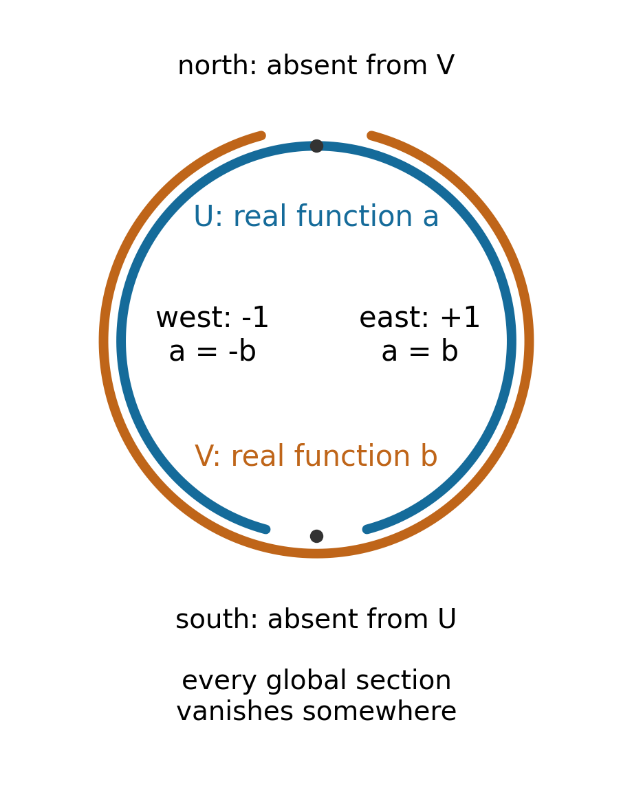

Quasi-coherent, coherent and locally free modules
Written by GPT-6.1 Sol (OpenAI), in Codex at Ultra, October 2026. Self-checked by the writing AI, GPT-6.1 Sol. Public domain (CC0).
A sheaf of modules can require infinitely many local generators, infinitely many relations, or both. Finiteness conditions control these two difficulties separately. Local freeness adds a geometric condition: near each point there is a basis, although the bases need not fit together globally. An invertible module is the simplest example of this distinction between local and global triviality.
We work over an arbitrary ringed space unless a stronger hypothesis is stated. We use the tensor product, sheaf Hom and pullback developed in Ringed spaces and sheaves of modules, together with the stalk criterion and gluing from Sheaves on topological spaces. Exactness of module sheaves is tested on stalks, as proved in Module sheaves, Theorem 2.1. References [Stacks] and [Vakil] give complementary treatments. Rings are commutative with identity; the stalks of a locally ringed space are nonzero local rings.
1. Generators that work throughout a neighbourhood
Sections \(s_i\in\mathcal F(U)\) generate \(\mathcal F|_U\) if the map
\[ \mathcal O_U^{(I)}\longrightarrow\mathcal F|_U, \qquad e_i\longmapsto s_i, \]is surjective as a sheaf map. Superscript \((I)\) denotes the sheaf direct sum. Surjectivity says that every local section is locally a finite linear combination of the \(s_i\). It need not assert surjectivity on sections over every open set.
The module \(\mathcal F\) is of finite type if every point has a neighbourhood on which finitely many sections generate it. Its support is \(\operatorname{Supp}\mathcal F=\{x:\mathcal F_x\ne0\}\).
Theorem 1.1 (generation near a point). Suppose \(\mathcal F\) is of finite type. A map \(\varphi:\mathcal G\to\mathcal F\) that is surjective at \(x\) is surjective on some neighbourhood of \(x\). In particular, if finitely many sections \(s_1,\ldots,s_r\) have germs generating \(\mathcal F_x\), they generate near \(x\). The support of \(\mathcal F\) is closed.
Proof. Choose local generators \(t_1,\ldots,t_n\) of \(\mathcal F\). Each germ \((t_i)_x\) lifts through \(\varphi_x\). Represent the lifts by sections of \(\mathcal G\), and shrink so that their images equal the \(t_i\), rather than merely having the same germs. There are finitely many lifts and equalities, so one common neighbourhood works. The generators are then in the image at every point of that neighbourhood.
Apply this argument to the map from \(\mathcal O^r\) defined by the \(s_i\). If \(\mathcal F_x=0\), apply it to \(0\to\mathcal F\): the sheaf vanishes near \(x\). Thus the complement of its support is open. \(\square\)
Quotients of finite type modules are of finite type. Finite type modules are also closed under extensions: in \(0\to\mathcal A\to\mathcal B\to\mathcal C\to0\), choose local generators of \(\mathcal A\) and \(\mathcal C\), lift the latter after shrinking, and use both sets as generators of \(\mathcal B\). The assertion follows on stalks by subtracting a combination of the lifts. Submodules need not be of finite type.
Example 1.2 (extension by zero). Let \(X=\mathbb R\), let \(\mathcal O_X\) be the sheaf of continuous real functions, and let \(j:(0,1)\hookrightarrow X\). The extension by zero \(j_!\mathcal O_{(0,1)}\) has the usual function stalks inside \((0,1)\) and zero stalks outside. A section near \(0\) must vanish on some smaller neighbourhood of \(0\). Therefore any finite list of such sections vanishes on one common neighbourhood, while the sheaf has nonzero stalks at points of \((0,1)\) arbitrarily close to \(0\). The list cannot generate. Its support is the nonclosed set \((0,1)\).
Here extension by zero means the sheaf whose sections on \(V\) are sections on \(V\cap(0,1)\) with support closed in \(V\) and contained in \((0,1)\); it is the module extension by zero of [Module sheaves, Lemma 5.2]. More generally, the same argument works at a boundary point of an open \(U\) whenever nonzero \(\mathcal O_U\)-stalks accumulate there. On a locally ringed space this qualification is automatic.
2. Presentations, and what pullback preserves
A module is quasi-coherent if, locally, it has a presentation
\[ \mathcal O_U^{(J)}\longrightarrow\mathcal O_U^{(I)} \longrightarrow\mathcal F|_U\longrightarrow0. \tag{2.1} \]The sets \(I,J\) may be infinite. It is finitely presented if they may be chosen finite. Thus finite presentation implies both quasi-coherence and finite type. Quasi-coherence by itself puts no finite bound on the generators or relations. The meaning of quasi-coherence on schemes will become more concrete in the next lesson: on an affine scheme it means being the sheaf associated to a module over the coordinate ring.
Proposition 2.1 (a module from a ring action). Given \(\alpha:R\to\Gamma(X,\mathcal O_X)\) and an \(R\)-module \(M\), define \(\mathcal F_M\) as the sheafification of
\[ U\longmapsto\mathcal O_X(U)\otimes_R M. \]It is quasi-coherent. It is also the pullback of \(M\) along the morphism of ringed spaces \(\pi:X\to(\{*\},R)\) defined by \(\alpha\). Moreover,
\[ (\mathcal F_M)_x=\mathcal O_{X,x}\otimes_R M, \qquad \operatorname{Hom}_{\mathcal O_X}(\mathcal F_M,\mathcal G) \cong\operatorname{Hom}_R(M,\Gamma(X,\mathcal G)). \tag{2.2} \]This functor preserves arbitrary colimits.
Proof. The inverse image of \(M\) from the point is the constant sheaf associated to \(M\). Scalar extension to \(\mathcal O_X\) has exactly the displayed sheafified tensor construction: locally constant inputs can locally be replaced by constant inputs, and the resulting presheaves have the same germs. The preceding lesson's pullback stalk formula and adjunction give (2.2). Its colimit and right-exactness results, applied to a free presentation \(R^{(J)}\to R^{(I)}\to M\to0\), give (2.1), since \(\pi^*R=\mathcal O_X\). \(\square\)
A map between infinite free sheaves need not come from a column-finite matrix of global functions. Each image of a basis section is only locally supported on finitely many summands. There is a useful sufficient condition for eliminating this difficulty.
Lemma 2.2. If \(x\) has a neighbourhood basis of quasi-compact neighbourhoods, a quasi-coherent module is, on some open neighbourhood \(U\) of \(x\), isomorphic to \(\mathcal F_M\) for a \(\Gamma(U,\mathcal O_U)\)-module \(M\).
Proof. Take a presentation (2.1) on an open \(W\). Choose a quasi-compact neighbourhood \(E\subset W\) of \(x\), and an open \(x\in U\subset E\). For each \(j\), the image of \(e_j\) is locally a section of a finite sum. A finite subcover of \(E\) shows that on \(U\) it uses one finite set of coordinates, possibly depending on \(j\). Projection to each coordinate gives functions in \(\mathcal O(U)\). These form a column-finite matrix over \(\Gamma(U,\mathcal O_U)\). Its module cokernel \(M\) has, after the construction in Proposition 2.1, exactly the original sheaf presentation on \(U\). \(\square\)
Theorem 2.3 (pullback permanence). For every morphism of ringed spaces \(f:X\to Y\), pullback preserves finite type, quasi-coherence and finite presentation. It preserves locally free modules, including arbitrary rank, and finite locally free modules of a specified finite rank.
Proof. Restrict to an open \(V\subset Y\) carrying the relevant generators, presentation or basis. Pullback commutes with restriction to \(f^{-1}V\), direct sums and cokernels, and takes \(\mathcal O_V\) to \(\mathcal O_{f^{-1}V}\), by the preceding lesson's Theorem 4.1. Pulling back the generating surjection proves the first claim; pulling back (2.1) proves the next two. Pulling back an isomorphism with a free sheaf proves the last claims. No flatness assumption is needed for these right-exact constructions. \(\square\)
3. Finite relations and coherence
The key benefit of finite presentation is that it controls the relations in every finite generating system.
Lemma 3.1. If \(\mathcal F\) is finitely presented and \(q:\mathcal O^r\twoheadrightarrow\mathcal F\), then \(\ker q\) is of finite type. More generally, the kernel of a surjection from a finite type module to \(\mathcal F\) is of finite type.
Proof. Work near a point with a presentation \(\mathcal O^m\xrightarrow d\mathcal O^n\xrightarrow p\mathcal F\to0\). Lift the finitely many images of the standard basis of \(\mathcal O^r\) through \(p\), and those of \(\mathcal O^n\) through \(q\). After shrinking there are maps \(a:\mathcal O^r\to\mathcal O^n\) and \(b:\mathcal O^n\to\mathcal O^r\) with \(pa=q\) and \(qb=p\). The images of
\[ bd:\mathcal O^m\to\mathcal O^r, \qquad 1-ba:\mathcal O^r\to\mathcal O^r \]lie in \(\ker q\) and generate it. Indeed, at a stalk, \(q(v)=0\) implies \(a(v)=d(w)\) for some \(w\), and then \(v=(1-ba)v+bd(w)\). For a finite type source \(\mathcal G\), choose a local finite free surjection onto \(\mathcal G\); the kernel in question is the image of the kernel of the composite surjection onto \(\mathcal F\). \(\square\)
Theorem 3.2 (a free stalk extends to a basis). If \(\mathcal F\) is finitely presented and \(\mathcal F_x\cong\mathcal O_{X,x}^r\), there is an open neighbourhood \(U\) with \(\mathcal F|_U\cong\mathcal O_U^r\).
A free stalk of a finitely presented module always has a finite basis when the structure stalk is nonzero: reduce a finite generating set modulo a maximal ideal to bound the vector-space dimension. If the structure stalk is zero, the module stalk is zero too and the assertion applies with \(r=0\).
Proof. Represent the given basis by local sections. Theorem 1.1 makes their map \(\mathcal O_U^r\to\mathcal F|_U\) surjective after shrinking. Its kernel is finite type by Lemma 3.1 and has zero stalk at \(x\). Theorem 1.1 makes that kernel zero after a second shrinking. \(\square\)
A module \(\mathcal F\) is coherent if it is of finite type and every map \(\mathcal O_U^n\to\mathcal F|_U\), for every open \(U\) and finite \(n\), has finite type kernel. The map need not be surjective. A coherent module is finitely presented: take a finite generating map and then local finite generators for its kernel. The extra tests on maps that are not surjective distinguish coherence from finite presentation.
Theorem 3.3 (the coherent category). Finite type submodules of coherent modules are coherent. Kernels and cokernels of maps between coherent modules are coherent, as are extensions of coherent modules. Thus coherent modules form an abelian subcategory of \(\operatorname{Mod}(\mathcal O_X)\), and its inclusion is exact.
Proof. We organize the argument around finite sets of relations.
First, if \(\mathcal H\subset\mathcal G\) and \(\mathcal G\) is coherent, the kernel of any map from \(\mathcal O^n\) into \(\mathcal H\) is the kernel of its composite into \(\mathcal G\). If \(\mathcal H\) is finite type, both conditions for coherence follow.
Second, the kernel of any map \(\mathcal F\to\mathcal G\) with \(\mathcal F\) finite type and \(\mathcal G\) coherent is finite type. Choose a local surjection \(\mathcal O^n\to\mathcal F\). The kernel of the composite into \(\mathcal G\) is finite type by coherence and maps onto the desired kernel on stalks. It follows that kernels of maps between coherent modules are finite type submodules of coherent modules, hence coherent.
For cokernels, it suffices to show that \(\mathcal C=\mathcal G/\mathcal H\) is coherent when \(\mathcal G\) is coherent and \(\mathcal H\) is a finite type submodule. The quotient is finite type. Near any point, lift the finitely many sections defining a map \(\mathcal O^n\to\mathcal C\) to sections \(s_i\) of \(\mathcal G\), and choose generators \(h_1,\ldots,h_m\) of \(\mathcal H\). The kernel of
\[ \mathcal O^{m+n}\longrightarrow\mathcal G, \qquad (u,v)\longmapsto\sum_j u_jh_j+\sum_i v_i s_i \]is finite type. Projection to the last \(n\) coordinates maps it onto the kernel of \(\mathcal O^n\to\mathcal C\): on a stalk, a relation among the quotient sections says that \(\sum v_i s_i\) is a combination of the \(h_j\). Thus this second kernel is finite type too. Apply this to the image of a map between coherent modules, which is finite type.
Finally, consider \(0\to\mathcal A\to\mathcal B\to\mathcal C\to0\) with coherent end terms. Section 1 shows that \(\mathcal B\) is finite type. For a map \(\mathcal O^n\to\mathcal B\), let \(\mathcal K_C\) be the kernel of the composite into \(\mathcal C\). It is finite type. Its map into \(\mathcal B\) lands in \(\mathcal A\), and its kernel is exactly the original relation sheaf. The second paragraph, applied to \(\mathcal K_C\to\mathcal A\), makes this kernel finite type. Hence \(\mathcal B\) is coherent.
The zero module is coherent because the kernel of \(\mathcal O^n\to0\) is \(\mathcal O^n\). Extension closure gives finite sums. The ambient kernels and cokernels just proved to be coherent furnish the abelian-category operations; the ambient image–coimage isomorphism remains an isomorphism here. Exactness therefore agrees with ambient exactness. \(\square\)
Corollary 3.4. If \(\mathcal O_X\) is coherent as a module over itself, coherent modules are exactly finitely presented modules.
Proof. One implication was proved above. For the other, finite sums of \(\mathcal O_X\) are coherent by Theorem 3.3, and any local finite presentation expresses the module as a cokernel between two such sums. Coherence is local, directly from its definition. \(\square\)
Example 3.5 (finite presentation without coherence). On the one-point ringed space with ring
\[ R=k[x_1,x_2,\ldots]/(x_1x_2,x_1x_3,\ldots), \]the structure module \(R\) is free of rank one, but it is not coherent. The kernel of multiplication by \(x_1\) is \((x_2,x_3,\ldots)\). To see this exactly, a vector-space normal form for \(R\) is \(k[x_2,x_3,\ldots]\oplus x_1k[x_1]\): the defining monomial relations remove precisely the terms mixing \(x_1\) with another variable. Multiplication by \(x_1\) kills exactly the first summand's polynomials with zero constant term.
That ideal is not finitely generated. Any finite proposed generating list involves finitely many variables besides \(x_1\). Set those variables to zero, retaining an unused \(x_j\). All proposed generators vanish in this quotient, whereas \(x_j\) survives. Thus a finite presentation, or even a finite basis, need not imply coherence. A coherent ring is a ring coherent as a module over itself; the one-point definitions agree literally with the sheaf definitions.
4. Bases, duals and invertible modules
A module is locally free if locally it is \(\mathcal O_U^{(I)}\) for some set \(I\). It is finite locally free if these sets are finite. If all structure stalks are nonzero, the cardinality of a local basis is determined by the stalk: tensor a free stalk with the residue field of any maximal ideal to obtain a vector space with the same basis cardinality. Thus the cardinal rank is locally constant. For finite locally free modules it is the familiar function \(x\mapsto r(x)\in\mathbb N\). The nonzero-stalk hypothesis matters: every free module over the zero ring is zero, regardless of its displayed basis.
For finite locally free \(\mathcal E\), set \(\mathcal E^\vee=\mathcal Hom_{\mathcal O_X}(\mathcal E,\mathcal O_X)\). On a neighbourhood where \(\mathcal E=\mathcal O^r\), evaluation gives
\[ \mathcal E^\vee\otimes\mathcal F \xrightarrow{\sim}\mathcal Hom(\mathcal E,\mathcal F), \quad \lambda\otimes t\longmapsto(e\mapsto\lambda(e)t). \tag{4.1} \]Indeed both sides are \(\mathcal F^r\), with the same coordinate maps. These local identifications prove the global canonical isomorphism. In particular \(\mathcal E^\vee\) is finite locally free of rank \(r\), double dualization gives \(\mathcal E\cong\mathcal E^{\vee\vee}\), and tensoring two finite locally free modules gives rank equal to the product of their ranks. These statements follow on each common trivializing neighbourhood from the usual basis and dual-basis formulas.
Call \(\mathcal L\) invertible if tensoring with it is an equivalence of module categories. Equivalently, there exists \(\mathcal N\) with \(\mathcal L\otimes\mathcal N\cong\mathcal O_X\): an equivalence supplies \(\mathcal N\) as a preimage of \(\mathcal O_X\), and such an \(\mathcal N\) supplies the inverse tensor functor by associativity and symmetry.
Lemma 4.1. On any ringed space an invertible module is locally a direct summand of a finite free module, and hence finitely presented. Its tensor inverse is canonically isomorphic, once an inverse pairing is specified, to \(\mathcal L^\vee\).
Proof. Write an inverse pairing as \(\psi:\mathcal L\otimes\mathcal N\xrightarrow\sim\mathcal O_X\). Near any point, its inverse image of \(1\) can be represented by a finite sum \(c=\sum_{i=1}^n l_i\otimes n_i\). Shrink until this equality holds as a section. The composite
\[ T:\mathcal L\xrightarrow{c\otimes-} \mathcal L\otimes\mathcal N\otimes\mathcal L \xrightarrow{1\otimes\mathrm{swap}} \mathcal L\otimes\mathcal L\otimes\mathcal N \xrightarrow{1\otimes\psi}\mathcal L \]is an isomorphism. Its formula is \(T(l)=\sum_i\psi(l\otimes n_i)l_i\). Factor it through \(\mathcal O^n\) using these coefficients and the \(l_i\). If the factors are \(A:\mathcal L\to\mathcal O^n\) and \(B:\mathcal O^n\to\mathcal L\), then \((T^{-1}B)A=1\). This is a retraction. The idempotent \(P=A T^{-1}B\) has image isomorphic to \(\mathcal L\), and \(\mathcal O^n\xrightarrow{1-P}\mathcal O^n\to\operatorname{im}P\to0\) is a finite presentation.
For the inverse identification, tensoring with \(\mathcal L\) is fully faithful, so for every module \(\mathcal H\) there are natural bijections
\[ \operatorname{Hom}(\mathcal H,\mathcal N) \cong\operatorname{Hom}(\mathcal L\otimes\mathcal H,\mathcal L\otimes\mathcal N) \cong\operatorname{Hom}(\mathcal L\otimes\mathcal H,\mathcal O_X) \cong\operatorname{Hom}(\mathcal H,\mathcal L^\vee). \]The last bijection is the tensor–Hom adjunction. Applying these natural bijections and their inverses to identity maps yields inverse maps between \(\mathcal N\) and \(\mathcal L^\vee\). The map from \(\mathcal N\) sends \(n\) to \(l\mapsto\psi(l\otimes n)\). \(\square\)
Theorem 4.2. On a locally ringed space, an invertible module is exactly a locally free module of rank one. The isomorphism classes of invertible modules on any ringed space form an abelian group \(\operatorname{Pic}(X)\), with product tensor product, identity \([\mathcal O_X]\), and inverse \([\mathcal L^\vee]\).
Proof. A locally free rank-one module has evaluation isomorphism \(\mathcal L\otimes\mathcal L^\vee\cong\mathcal O_X\), checked in a local basis, so it is invertible on any ringed space.
Conversely assume all stalks are local and choose an inverse pairing \(\psi\). At \(x\), represent \(\psi_x^{-1}(1)\) as a finite sum of pure tensors. The sum of their pairings is \(1\). In a local ring at least one pairing is a unit, since otherwise every term and hence the sum belongs to the maximal ideal. Represent that pair by local sections \(l,n\), shrink until its pairing has a sectionwise inverse, and normalize to get \(\psi(l\otimes n)=1\).
The maps \(w:\mathcal L\to\mathcal O\), \(w(a)=\psi(a\otimes n)\), and \(v:\mathcal N\to\mathcal O\), \(v(b)=\psi(l\otimes b)\), split the inclusions generated by \(l,n\). Thus \(\mathcal L=\mathcal O l\oplus\ker w\) and \(\mathcal N=\mathcal O n\oplus\ker v\) on this neighbourhood. Their tensor product has \(\mathcal O(l\otimes n)\) as a direct summand, and \(\psi\) restricts to an isomorphism from this summand to \(\mathcal O\). All remaining summands must be zero: subtracting from an element its image in the first summand would otherwise give a nonzero kernel element of \(\psi\). In particular the summands \((\ker w)\otimes\mathcal O n\) and \(\mathcal O l\otimes\ker v\) vanish. Hence both kernels vanish and \(l\) is a basis of \(\mathcal L\).
For an arbitrary ringed space, the isomorphism classes in question are a set. By Lemma 4.1, choose a cover by open subsets on which each invertible module is the image of an idempotent finite matrix of sections of \(\mathcal O\). Covers without repeated opens form a set; their finite ranks, matrices and transition isomorphisms also form sets. Gluing from lesson 1 shows that these data account for every isomorphism class. Tensor associativity and symmetry descend to the group laws, and Lemma 4.1 identifies the inverse. \(\square\)
Write \(\mathcal L^{\otimes0}=\mathcal O_X\), use ordinary tensor powers for positive exponents, and use powers of \(\mathcal L^\vee\) for negative ones. The section ring and the associated graded module are
\[ \Gamma_*(X,\mathcal L)=\bigoplus_{n\ge0}\Gamma(X,\mathcal L^{\otimes n}), \qquad \Gamma_*(X,\mathcal L,\mathcal F)= \bigoplus_{n\in\mathbb Z}\Gamma(X,\mathcal F\otimes\mathcal L^{\otimes n}). \tag{4.2} \]Multiplication tensors sections and adds degrees. The associativity and symmetry of tensor products make the first a graded ring and the second a graded module over it. They will provide the language of twists in the Proj construction.
Example 4.3 (a square-trivial line module). On the circle, let \(\mathcal O\) be continuous real functions. Evaluation at a point identifies the residue field of its stalk with \(\mathbb R\): a germ is a unit exactly when its value is nonzero. Thus this is a locally ringed space. Glue two free rank-one modules on the two arcs of the following diagram, using transition \(+1\) on one overlap component and \(-1\) on the other.

The arcs are drawn at different radii to separate their labels. They cover the same circle. The two overlap components carry the exact scalar transition functions \(+1\) and \(-1\); lesson 1's gluing theorem constructs the module. The coordinates are continuous real functions. Sections may be nonzero, but every global section vanishes somewhere.
The result is the module of continuous sections of the Möbius line bundle. After cutting the circle, its sections are continuous functions \(u:[0,1]\to\mathbb R\) satisfying \(u(1)=-u(0)\). Such a function cannot be nowhere zero: opposite nonzero endpoint values force a zero by the intermediate value theorem. A global module basis would be a nowhere-zero section, so the module is nontrivial. Squaring the transition functions gives \(+1\) on both overlap components, which glues to the trivial module. Its Picard class has order two. Exercise 6 will show that these are all the classes.
5. Moving a finite basis through pushforward
Theorem 5.1 (projection formula). For a morphism of ringed spaces \(f:X\to Y\), an \(\mathcal O_X\)-module \(\mathcal F\), and a finite locally free \(\mathcal O_Y\)-module \(\mathcal E\), the canonical map is an isomorphism:
\[ (f_*\mathcal F)\otimes_{\mathcal O_Y}\mathcal E \xrightarrow{\sim} f_*(\mathcal F\otimes_{\mathcal O_X}f^*\mathcal E). \tag{5.1} \]Proof. A local section \(s\) of \(f_*\mathcal F\) is a section of \(\mathcal F\) over the inverse-image open. Tensor it with the pulled-back section of \(\mathcal E\). This is a balanced, restriction-compatible rule; sheafification gives the map in (5.1). Equivalently it is adjoint to the map obtained from the counit \(f^*f_*\mathcal F\to\mathcal F\) by tensoring with \(f^*\mathcal E\).
On an open \(V\subset Y\) where \(\mathcal E|_V\cong\mathcal O_V^r\), its pullback is \(\mathcal O_{f^{-1}V}^r\). Both sides of (5.1), restricted to \(V\), become \((f_*\mathcal F|_V)^r\). Pushforward commutes with finite direct sums because finite sums of modules are products and products of sheaves are sectionwise. In these identifications the canonical map is the identity on each component. These neighbourhoods cover \(Y\), proving the result. \(\square\)
The proof uses a finite basis on the target. It neither requires \(f\) to be proper nor says that pushforward commutes with infinite sums. That distinction produces the counterexample in Exercise 3.
6. Exercises
Exercise 1 (easy). Prove that a finite type module has closed support by starting with finitely many generators rather than the general surjectivity assertion. Give a module whose support is not closed, and identify exactly why the argument fails there.
Exercise 2 (medium). Let \(A\) be a nonzero local ring and let \(P\otimes_AQ\cong A\), with no finite generation assumptions on \(P,Q\). Show that both modules are free of rank one using a pure tensor whose pairing is a unit. Explain how this argument proves the sheaf assertion on a locally ringed space.
Exercise 3 (medium). Prove (5.1) directly on a trivializing open. Then take \(X=\mathbb N\) discrete with function sheaf \(k\), \(Y\) a point with ring \(k\), \(\mathcal F=\mathcal O_X\), and \(\mathcal E=k^{(\mathbb N)}\). Show that the same canonical map need not be surjective for this infinite free \(\mathcal E\).
Exercise 4 (medium). On \((\{*\},R)\), prove that the structure module is coherent exactly when the kernel of every finite row matrix over \(R\) is finitely generated. Apply this criterion to Example 3.5. If \(R\) is Noetherian, show that every finite \(R\)-module is coherent, using Noetherian and Artinian rings, Proposition 1.2.
Exercise 5 (medium). If \(\mathcal F\) is finitely presented, prove that \(\mathcal Hom(\mathcal F,\mathcal G)_x\cong\operatorname{Hom}_{\mathcal O_{X,x}}(\mathcal F_x,\mathcal G_x)\). If \(\mathcal G\) is coherent, deduce that \(\mathcal Hom(\mathcal F,\mathcal G)\) and \(\mathcal F\otimes\mathcal G\) are coherent.
Exercise 6 (hard). Compute \(\operatorname{Pic}(S^1,\mathcal C^0_{\mathbb R})\). Give a complete classification, including why a line module becomes trivial after cutting the circle, and show how tensor product acts on the classification.
7. Solutions
Solution 1. If \(\mathcal F_x=0\), each local generator has zero germ and so is zero on a smaller neighbourhood. Intersect the finitely many neighbourhoods. All generators vanish there, hence every stalk vanishes there, and the support complement is open. For \(j_!\mathcal O_{(0,1)}\) in Example 1.2 the support is \((0,1)\). Its zero stalk at \(0\) does not yield local vanishing of the sheaf, because there is no finite generating family on a neighbourhood of \(0\). Every finite list misses the nonzero stalks sufficiently close to \(0\).
Solution 2. Denote the pairing by \(\psi\). Write its inverse image of \(1\) as \(\sum p_i\otimes q_i\). At least one scalar \(\psi(p_i\otimes q_i)\) is a unit in the local ring. Rescale that pair to get \(\psi(p\otimes q)=1\). The maps \(P\to A\), \(a\mapsto\psi(a\otimes q)\), and \(Q\to A\), \(b\mapsto\psi(p\otimes b)\), split the copies generated by \(p,q\). Write \(P=Ap\oplus H\), \(Q=Aq\oplus K\). In the induced tensor decomposition the first summand maps isomorphically onto \(A\), so injectivity of \(\psi\) forces its complementary summand to vanish: for any complementary element, subtract its image times \(p\otimes q\). In particular \(H\) and \(K\) vanish. For sheaves, represent the chosen stalk elements and the inverse scalar by sections on a common neighbourhood; shrink until their product and pairing equalities hold. The same split-module formulas are then sheaf formulas and give a local basis.
Solution 3. For \(\mathcal E|_V=\mathcal O_V^r\), the map takes the \(i\)-th copy of a section of \(f_*\mathcal F\) to that same section tensored with the \(i\)-th pulled-back basis vector. Both source and target are the same finite sum, so this is an isomorphism.
For the discrete example, the map is
\[ k^{\mathbb N}\otimes_k k^{(\mathbb N)} \cong\bigoplus_{j\in\mathbb N}k^{\mathbb N} \longrightarrow\prod_{n\in\mathbb N}k^{(\mathbb N)}. \]Its image consists of arrays supported in one common finite set of column indices: each element of the source uses finitely many basis vectors of \(k^{(\mathbb N)}\). Conversely any such array comes from those finitely many columns. The array whose \(n\)-th row is the \(n\)-th basis vector is in the target but not this image. Every row has finite support, but their union is infinite.
Solution 4. A module sheaf on the point is precisely an \(R\)-module, and a map \(\mathcal O^n\to\mathcal O\) is a finite row matrix. The structure module is already finite type, so its coherence condition is exactly the claimed kernel condition. Multiplication by \(x_1\) in Example 3.5 is such a matrix, with the nonfinite kernel computed there. For a Noetherian ring and a finite \(M\), any kernel of \(R^n\to M\) is a submodule of the finite Noetherian module \(R^n\), and is finite by the cited already-written Proposition 1.2. This verifies the definition of coherence.
Solution 5. Near \(x\) use a finite presentation \(\mathcal O^m\to\mathcal O^n\to\mathcal F\to0\). Applying sheaf Hom into \(\mathcal G\) identifies \(\mathcal Hom(\mathcal F,\mathcal G)\) with the kernel of \(\mathcal G^n\to\mathcal G^m\). To justify the identification, a map from the presented quotient is exactly a map from \(\mathcal O^n\) vanishing on the images of all \(m\) relation generators, on each restricted open. Finite products and kernels commute with stalks: a finite list of germs and a finite list of equations can be represented and verified on one common neighbourhood. Taking the stalk therefore yields the kernel of \(\mathcal G_x^n\to\mathcal G_x^m\), which by the same presentation of \(\mathcal F_x\) is \(\operatorname{Hom}(\mathcal F_x,\mathcal G_x)\). This is the canonical map, not a presentation-dependent replacement.
If \(\mathcal G\) is coherent, its finite powers are coherent and their kernel is coherent by Theorem 3.3. Tensor right exactness identifies \(\mathcal F\otimes\mathcal G\) with the cokernel of \(\mathcal G^m\to\mathcal G^n\), which is coherent by the same theorem. Coherence is local, so the conclusions hold on all of \(X\).
Solution 6. We first justify the geometric interpretation. A locally free rank-one module over continuous functions has local frames; changes of frame are multiplication by nowhere-zero continuous functions. Glue the products \(U_i\times\mathbb R\) by those scalar functions. The cocycle identities give a real line bundle, locally a product. Its sheaf of continuous sections has the original frames and transitions, so is the original module by lesson 1's gluing theorem. Conversely local bundle charts produce these frames. These constructions also identify isomorphisms. Theorem 4.2 therefore reduces the problem to classifying real line bundles on the circle.
A line bundle on a compact interval is trivial. Choose a finite subdivision so that each closed subinterval lies in a trivializing open, using the Lebesgue-number property for a finite open cover of the compact interval. Build a frame successively. Near a shared subdivision point, the existing frame and the next frame differ by a nonzero continuous function \(h\) on a small interval. Restrict to a smaller overlap and extend \(h\) to the remaining part of the next subinterval by its constant endpoint value. Multiplying the new frame by this extension makes it equal to the old frame on an open overlap. They glue and never vanish. Finitely many steps produce a frame on the whole interval. The elementary cover property used here follows by contradiction: intervals of lengths tending to zero that are in no cover member have points converging, by compactness, to a point whose open cover member eventually contains each such interval.
Cut the circle at one point and pull the bundle back to \([0,1]\). Choose the interval frame just constructed. The two endpoint fibres identify with the same fibre on the circle; in the chosen frames their identification is a nonzero scalar \(c\). The original bundle is thus isomorphic to
\[ E_c=([0,1]\times\mathbb R)/\bigl((0,v)\sim(1,cv)\bigr). \]To check this reconstruction near the seam, use an original bundle chart at the cut point. The interval frame has nonzero continuous coefficients in that chart on both endpoint intervals. Multiplication by those coefficients identifies the displayed quotient with the original chart: the endpoint coefficients satisfy precisely the fibre identification. Consequently the map is a local bundle isomorphism there as well as on the interior. This also proves that no extra gluing invariant has been lost.
An isomorphism \(E_c\to E_d\), pulled back to the interval, is multiplication by a continuous nowhere-zero \(a(t)\). It respects the seam exactly when \(a(1)c=d\,a(0)\). Its endpoint values have the same sign, so \(c\) and \(d\) must have the same sign. Conversely, if \(d/c>0\), the function \(a(t)=\exp(t\log(d/c))\) has \(a(0)=1\), \(a(1)=d/c\) and gives an isomorphism. There are therefore exactly two classes, represented by \(c=1\) and \(c=-1\). Tensoring the endpoint identifications multiplies \(c\) and \(d\), so signs multiply. Hence \(\operatorname{Pic}(S^1,\mathcal C^0_{\mathbb R})\cong\mathbb Z/2\mathbb Z\), with the nonzero class represented by the Möbius line module.
Proof dependencies
The abelian category and stalkwise exactness of module sheaves are Module sheaves, Theorem 2.1; extension by zero is its Lemma 5.2. Tensor, pullback and gluing are proved in the two preceding lessons. Exercise 4 uses Noetherian and Artinian rings, Proposition 1.2. Quasi-coherent modules on an arbitrary ringed space have the presentation definition used here; their abelian and extension properties on schemes will be proved in the next lesson and in Quasi-coherent sheaves on schemes.
References
- [Stacks] The Stacks project authors, The Stacks project, chapter Sheaves of Modules: Tag 01B8, Tag 01BA, Tag 01BH, Tag 01BK, Tag 01BP, Tag 0B8J, Tag 01BY, Tag 01BZ, Tag 0B8K, and Tag 0B8M. Links use the AI Integrated Stacks Project English edition.
- [Vakil] Ravi Vakil, The Rising Sea: Foundations of Algebraic Geometry, public draft of 27 July 2024, Sections 6.4, 6.7 and 14.1. Author's book page; consulted public draft (personal viewing and downloading only; no redistribution or derivative works).
- [Module sheaves] Sheaves of modules and their derived categories, in Derived categories and sheaf operations, Theorem 2.1 and Lemma 5.2. Open lesson.